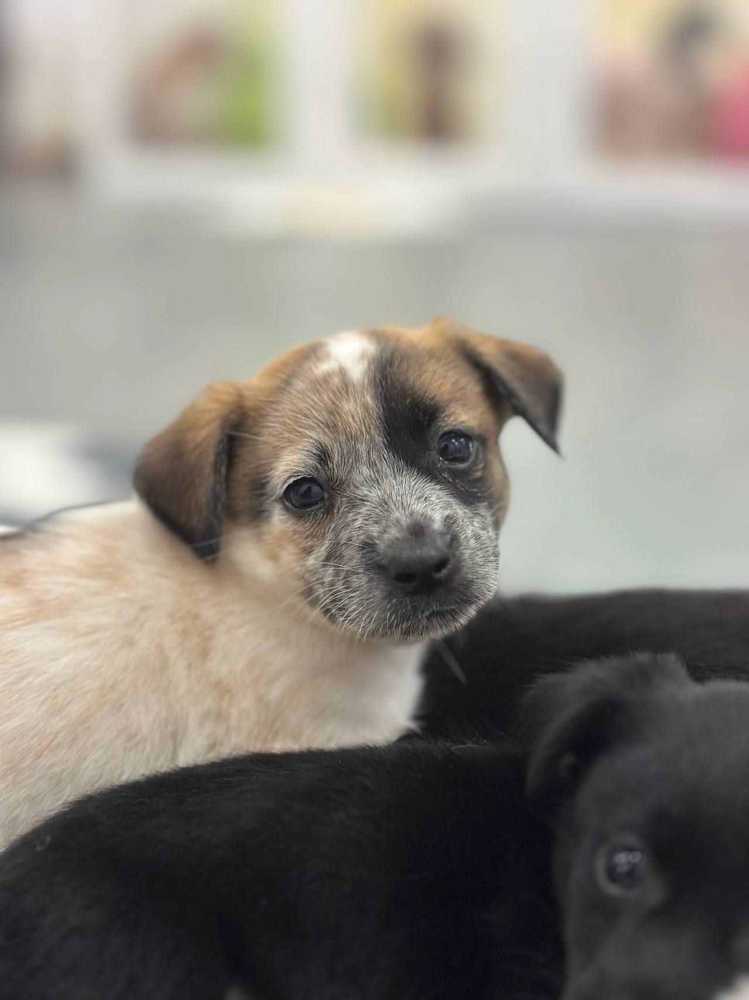
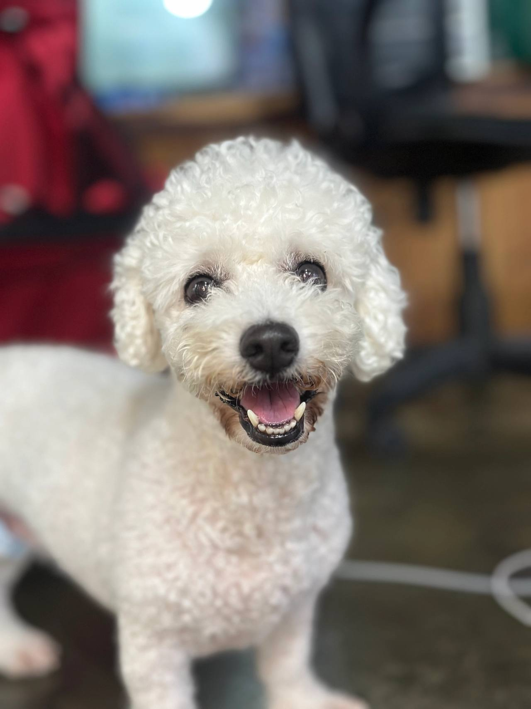
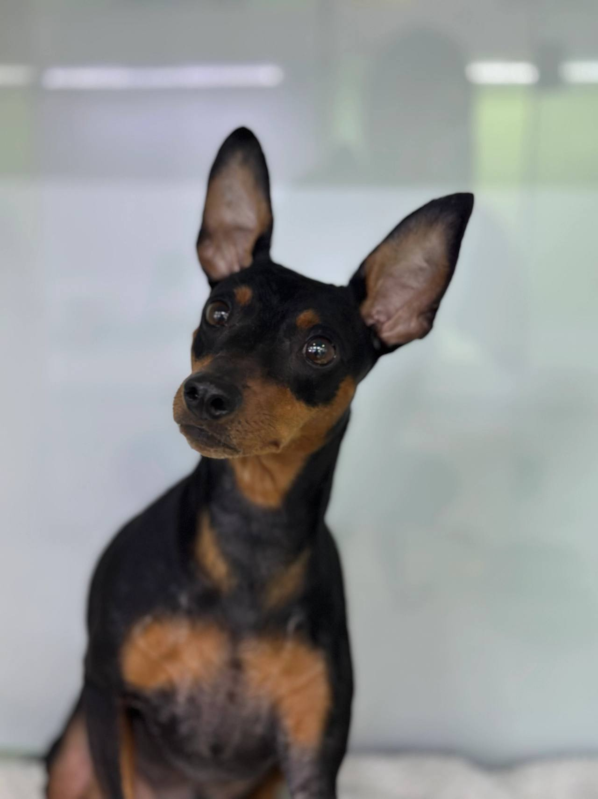

임신, 출산
출산 전후로돌보기 어렵거나아기와 함께 두기불안할 때
LOCAL GUIDE
상처 입은 동물들이 마음을 치유하고 건강한 일상을 되찾을 수 있도록 돕는 남원유기견센터 시설을 찾는 과정은 정성이 듭니다. 영양가 있는 식단 제공은 물론이고 주기적인 실내 소독이 실현되는지 면밀히 살펴야 합니다. 보호실 정원이 꽉 차 있을 때는 접수가 반려될 수밖에 없음을 양해하셔야 합니다.
REHOMING
개인적인 사정으로 반려견과 더 이상 함께하기 어려운 상황일 때 체계적인 절차를 거쳐 아이를 입소시키고 무료 분양으로 보금자리를 이어 줍니다. 전화 상담(0505-707-0401)을 통해 현재 상황을 파악하며 무리한 수용 대신 여건에 맞춰 신중하게 돌봄을 시작합니다.
갑작스러운 환경 변화 속에서도 아이가 평온함을 잃지 않도록 세심하게 보살피며 다음 행보를 준비합니다. 이는 책임 있는 보호 속에서 아이에게 새로운 가족을 만날 기회를 열어 주는 과정입니다.
새로운 가족을 찾아 주는 일은아이에게 건넬 수 있는마지막 선물입니다.
출산 전후로돌보기 어렵거나아기와 함께 두기불안할 때

함께 살다동물 알러지가 나타나생활이 어려워졌을 때

해외로 데려갈 수 없거나이사한 집에서함께하기 어려울 때군 입대와 오랜 부재도같은 경우에 가깝습니다.

보호자가 아프거나연로해졌을 때아이도 나이가 들어집에서 돌보기 어려울 때
상담부터 입양 공고까지, 순서는 같습니다.

유선 상담을 통해 나이, 지역, 질병 유무와 특이 상황을 확인합니다. 센터 내부 공간을 종합적으로 살펴본 뒤 1차 입소 가능 여부를 결정합니다.

직접 센터로 방문하시거나 이동 지원 일정을 조율하여 선택합니다. 전국 어디든 전담 인력이 무상으로 픽업하여 이동을 돕습니다.

제반 확인 사항과 규정된 비용 조항을 면밀하게 검토합니다. 안내 내용을 충분히 숙지한 후 정식 입소 동의서를 작성합니다.

건강 상태와 함께 대형견, 소형견, 노령견 여부를 다각도로 살핍니다. 확인된 상태에 맞춰 아이가 안전하게 머물 전용 공간을 정합니다.

안정적인 생활 속에서 아이의 사진과 영상을 정성껏 촬영합니다. 새로운 인연을 맞이할 수 있도록 사전 자료를 차분히 정리합니다.

공식적인 입양 공고를 등록하여 아이의 다음 여정을 이끕니다. 적합한 보금자리를 찾아 새로운 가족과 따뜻하게 연결됩니다.
개별 일과와 성향 점검을 거쳐 생활 적응을 준비하고 있는 강아지 현황입니다.
양육 환경과 반려견의 성향이 부합하는지 점검하는 순서입니다.
주거 형태, 가족 구성원의 동의 여부, 돌봄 시간 등을 유선 상담을 통해 점검합니다.
보호소에 방문하여 개체의 건강 이력과 행동 특성을 확인하고 직접 대면 시간을 가집니다.
지속 양육에 관한 세부 항목을 확인하고 확인 서류를 작성한 뒤 가정을 이룹니다.
산책하고, 밥 먹고, 미용하는 보호소의 하루입니다. 사진을 누르면 그 이야기를 볼 수 있어요.
안내
남원 도심의 바쁜 일상 속에서도 믿고 맡길 수 있는 전문적인 보호 시설을 찾는 문의가 꾸준합니다.
자세한 입소 조건과 생활 규정이 궁금하신 보호자께서는 대표 전화 0505-707-0401 연결로 남원유기견센터 관련 사항을 상세히 알아보세요. 정원이 초과되면 어떠한 경우에도 신규 수탁이 불가하므로 유선 일정 조율이 필수적입니다. 유선 통화를 통해 현재 아이의 특이 성향을 공유하고 상담을 예약할 수 있습니다.
포털 사이트에 특정 구역을 입력해 검색하다 보면 실제로 상주 인력이 없거나 시설이 존재하지 않는 허위 지점 주소들이 노출되어 혼선을 야기하는 경우가 빈번합니다. 이에 따라 전담 운영진은 전국 단위의 통합 유선 상담 창구를 개설하여 반려인의 거주지와 무관하게 정확한 잔여 정원을 파악할 수 있도록 돕고 있습니다.
아이가 머무를 수 있는 공간의 수용 능력은 매일 변동되기 때문에 무작정 오프라인 시설을 찾아가는 방식은 적절하지 않습니다. 유선망을 통해 현재 시점의 입소 가용 여부와 격리 관리실 현황을 사전 파악하는 과정이 선행되어야 하며, 파양과 입소는 0505-707-0401을 통해 실시간으로 조율할 수 있습니다.
생활 공간에 완벽히 적응한 아이는 전담 미디어 팀에 의해 일상 사진과 영상으로 기록됩니다. 아이의 해맑은 표정과 사랑스러운 습관, 장점과 주의점을 솔직하고 매력적으로 담아낸 공식 입양 프로필이 완성됩니다.
이 기록들은 공식 홈페이지와 SNS 네트워크를 통해 입양 희망자들에게 투명하게 공개됩니다. 허위 지점 주소나 과장된 문구 없이 실제 센터에서 생활하는 모습을 그대로 보여주는 신뢰도 높은 아카이빙이 진행됩니다.
치료를 마치고 재활 중이던 민석 씨는 센터로부터 아이가 새 가족의 품에서 환하게 웃고 있는 입양 사진을 전달받았습니다. 불가피한 이별로 인해 죄책감과 슬픔에 짓눌려 있던 민석 씨는 아이가 더 넓은 마당에서 사랑받으며 뛰노는 모습을 보며 마침내 무거운 마음의 짐을 내려놓을 수 있었습니다.
이처럼 체계적인 보호 시스템과 신뢰할 수 있는 입양 연계 절차는 한 생명을 끝까지 책임지고 지켜내는 가장 안전한 울타리가 됩니다. 남원 남원유기견센터 고민으로 밤잠을 이루지 못하고 계신다면, 주저하지 말고 전문 상담을 통해 아이의 빛나는 내일을 열어주시기 바랍니다.
Q: 아이를 맡긴 후 생활 모습이나 새로운 가정으로 가는 과정을 볼 수 있나요? 센터에서는 아이가 생활실에서 밥을 먹고 산책을 즐기며 적응하는 모습을 사진과 영상으로 꾸준히 아카이빙합니다. 이는 아이의 심리 상태를 점검하는 지표이자 입양 프로필의 기초가 됩니다.
A: 남원 남원유기견센터 확인을 거쳐 안정기에 접어든 아이들은 전용 채널을 통해 입양 희망자들에게 소개됩니다. 다만 기존 보호자의 잦은 사적 방문은 아이의 분리불안을 재발시키고 새 환경 적응을 저해하므로 정해진 소통 원칙에 따라 자료를 전달받게 됩니다.
아이가 센터에 안착한 뒤 어떻게 지내는지 확인하는 것은 모든 보호자의 당연한 바람입니다. 센터는 전문 인력을 통해 아이의 적응 사진과 영상을 기록하여 체계적으로 보관합니다.
다만 잦은 면회는 아이의 마음을 다시 흔들어 적응을 방해하므로, 사진과 공식 채널을 통한 비대면 소통 방식을 준수해야 합니다. 이러한 기준이 투명하게 안내되고 있는지 체크해 보시기 바랍니다.
반려견을 공식 시설에 인계하는 과정은 단순한 인도에 그치지 않고 법률적 보호 의무를 명확히 전환하는 행정 절차를 포함합니다. 센터에서는 정식 소유권 포기 및 관리 권한 위임 동의서를 작성하도록 안내하며, 이 과정에서 향후 새로운 입양자에게 법적 분쟁 없이 안전하게 소유권이 이전될 수 있는 기반을 다집니다.
국가 동물등록제도에 따라 등록된 외장형 칩이나 내장형 마이크로칩 정보 역시 변경 신고를 거쳐야 합니다. 등록증 사본과 함께 기본 예방접종 수첩, 그동안 섭취하던 주식 사료, 익숙한 냄새가 밴 애착 담요를 지참하면 아이의 심리적 불안을 낮추는 데 큰 도움이 됩니다.
프로필을 보고 입양을 희망하는 분들은 입양 전용 라인인 0505-464-1004로 연결되어 심층 심사를 받게 됩니다. 가족 구성원의 동의 여부, 실내 주거 형태, 산책 가능 시간, 경제적 양육 계획 등을 엄격히 심사합니다.
단순 변심으로 인한 재파양을 사전에 막기 위해 심도 있는 대면 인터뷰를 통과한 가정에만 최종적으로 아이가 인도됩니다. 입양 후에도 정기적인 사진 소통과 사후 상담을 지원함으로써 생명이 평생 행복할 수 있는 선순환을 완성합니다.
수년간 함께해 온 반려견과 이별해야 하는 순간은 누구에게나 예고 없이 찾아옵니다. 1인 가구로 생활하던 보호자 민석 씨는 불의의 사고로 장기 입원과 수술을 받게 되었고, 거동이 불가능해지면서 아이를 온전히 돌볼 수 없는 절박한 한계 상황에 놓였습니다. 주변 지인들에게 수소문했으나 대형견 특성상 쉽게 맡아줄 사람을 찾지 못했습니다.
지자체 공설 시설을 알아보았으나 공고 기간이 끝나면 인도적 규정이 집행된다는 사실에 깊은 절망감을 느꼈습니다. 아이의 지속적인 삶과 안전한 새 출발을 보장해 줄 민간 전문 보호 시설을 찾기 위해 고심하던 중, 남원 남원유기견센터 상담을 통해 전문 돌봄 체계가 갖춰진 센터와 인연이 닿게 되었습니다.
전국 전용 번호 사전 상담 및 공실 확인
유선 창구를 통해 보호소 내 잔여 수용 정원을 파악하고 아이의 상태에 맞춘 입소 가능성을 먼저 진단합니다.
개별 맞춤 생활실 입실 및 루틴 적응
독립된 생활 공간에 입실하여 전담 매니저의 집중 모니터링 아래 정해진 일과표에 맞춰 생활을 시작합니다.
생활 습관 및 병력 정보 사전 공유
입소 후 스트레스를 줄이기 위해 평소 배변 패턴, 식이 습관, 기저 질환 정보를 세밀하게 상담합니다.
남원유기견센터 상담 전화는 무엇인가요?입소 상담 전화는 0505-707-0401입니다. 남원이라고 해서 바로 맡길 수 있는 것은 아니고, 자리와 아이 상태를 먼저 확인합니다.
남원에 따로 적힌 보호소 주소가 있나요?남원유기견센터 페이지는 남원 상담 안내입니다. 이 글에 없는 주소를 그 지역 지점이라고 안내하지 않습니다.
전화하면 바로 진행되나요?자리가 없거나 생활이 맞지 않으면 바로 진행되지 않습니다. 전화로 확인한 뒤 만남을 정합니다.
보호소에 맡겨진 후 새로운 가족에게 입양되는 절차는 어떻게 되나요?성향 평가와 기초 적응을 마친 후 공식 공고를 통해 엄격한 주거 및 소득 심사를 통과한 입양자에게만 인계됩니다.
입소 시 어떤 증빙 서류들을 필수적으로 지참해야 하나요?보호자 신분증, 동물등록 정보 변경을 위한 등록증 또는 식별 번호, 최근 진료 및 접종 증명서를 지참하셔야 합니다.
시설 주소나 사진만 보고 입소를 바로 결정해도 문제없을까요?과장된 사진에 의존하지 마시고 유선 상담으로 실제 운영 규정과 정원 여부를 면밀히 검증한 뒤 진행하셔야 안전합니다.
개인 차량 이동이 불가능한 경우 이동 편의가 지원되나요?장거리 이동이나 대중교통 이용이 어려운 상황이라면 안전 전용 차량 운행 여부를 유선 상담을 통해 조율하실 수 있습니다.





CONTACT
입양과 입소, 전국 어디서든 전화로 상담합니다.
전국 입소문의